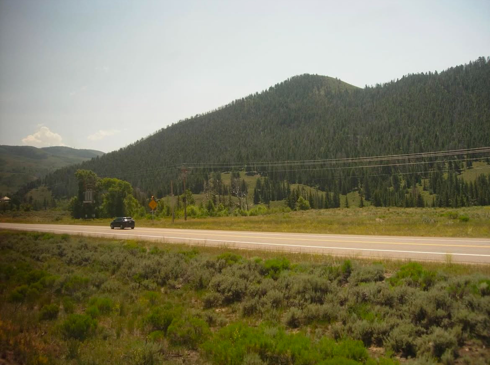

Light flurries of snow fall from the cold gray February sky onto the lake in Chicago. Seventy degrees and sunshine is expected in Dallas today. Los Angeles is soaking up the much-anticipated rain after the Santa Ana winds and a devastating fire season. On the 19th of July this past summer I departed on a 2,438-mile journey via rail out of Union Station just days after forty-one tornados hit Illinois. In the midst of a typically somber and melancholic winter, I stare out of the subway train window at my reflection in the glare as memories of the past summer begin to warm up my mind. I imagine I’m there again, somewhere in Iowa or Nebraska, the arid summers sun reflecting off endless fields of bright yellow corn.
The ticket pinned above my seat had written on it: “Emeryville, CA”, a detail rather insignificant. The friends I was to visit in four days in San Francisco were an afterthought, plans frivolously scrapped together last minute to rationalize a reason for my purchasing of the one-way ticket. I could’ve taken a plane, but that required much more of an organized intent. I did not yet fully understand the reason why I was aboard the 2pm train, all I knew was I was searching for something, the missing piece of the puzzle perhaps, or a continuous thread in the fabric, one that I could trace from Chesapeake Bay to Flagstaff Arizona. I was searching for that thing that is working constantly beneath the surface holding all the moving parts together. Though it could be snowing in Chicago and raining in California, I wanted to know what it was that sustained a continuity between it all that I was sure existed.
At night the train swayed in an acceleration reserved for only after dark hours. I laid awake, uncomfortable in my seat counting the minutes on my scratched, and in desperate need of polishing, watch not yet adjusted as we regressed backwards through time, waiting until it was a time just short of egregious but acceptable enough for me to justify moving into the observation car, buying a coffee, and waiting for the sun to rise up from the sweeping bare horizon.

My days were spent mostly in conversation. It was not a summer, nor is it a time lacking opinion, and I thought perhaps I would learn something from talking with various people of different perspectives. Cell phones had lost service passing through the Donner Pass, and I heard from a nurse who had just gotten on in Reno that morning that one of the presidential candidates had dropped out of the race. The attempted assassination of the other candidate occurring just a week prior. Over the murmurs of the Amish families and boisterous clamors of those who considered themselves “regulars”, those with an affinity a kind of epiphanic way of traveling. Through the drunken stories of drifters, the accents of the German family on their two-week tour of the United States, and the suspicious stares of those who knew they could not effectively make it past airport security. I listened and looked for hints of unspoken values, for the signs that might point me to the center, truths perhaps, that could survive East to West. Instead, the conversations I recall are those about the ways to stick a straw into a can of coke, or how, whiskey in shooter bottles from the café/bar could so easily convince me to get off in Green River, Utah and catch a bus to Moab. I learned to accept the volatility, there were no messages between the lines, no whispers of a sacred and unified morality. What I saw was simply what I got.
The general mood and atmosphere would change frequently, each individually unique and intense and not without the regard and participation of all present for it. There was a precise distinctiveness in each of the passing towns. In the unpredictable number of minutes allotted for smoking stops one could easily discern the specific ways the air felt. It could be so humid hair started sticking to the back of necks, or it could be so dry it smelt of sticks burning, and we were warned not to put our cigarettes out anywhere but the pavement on the platform. Each desolate town and every bustling station we passed evoked a feeling unlike the last. Even the most minuscule of differences still carried a weight so strong as to change my breath.

Miles of flat land, starting almost a matter of seconds after departure, continuing through all of Illinois, Iowa, Nebraska, and some of Colorado eventually transformed gracefully to mountains so fertile and green. We followed twisting and turning through the rapid flowing rivers until the colors dried out to hues of sandy beige and grays so slowly it only became noticeable when the hills started to burst with fiery gradients of oranges and reds. The verdant mountains turned to dust, hypnotized by the desert we became enchanted. Redwoods and Douglas Firs stood sanctimoniously awaiting our arrival in northern California. I stood staring out the window of the last train car facing behind, the train tracks rapidly being pulled out from underneath, like the long unwinding of a never-ending ball of yarn. Watching as they evaporated out of sight, I crossed another stop off my timetable.


I looked South and saw the highway nearby. There was always a highway nearby, as they follow the route almost parallel the entire way. Cars and trucks and the occasional motorcycle passed by quickly, flashes of light flying by in the transitory evening sky. A feeling of reassurance emerged inside me as if I just witnessed something as miraculous and well guided as shooting star.



On reflection, I sit in my apartment and look outside my window. Airplanes, four visible to me right now, illuminate in the distance and twinkle like stars. Little specks from elsewhere, coming and going from places of different climates and paces. Immersed by the idiosyncrasies, compelled by a kaleidoscope with endless complexity. The only connections found are on the interstates and in flight transfers, on railroads that take you through tunnels and over bridges to places of exhilarating specificity.